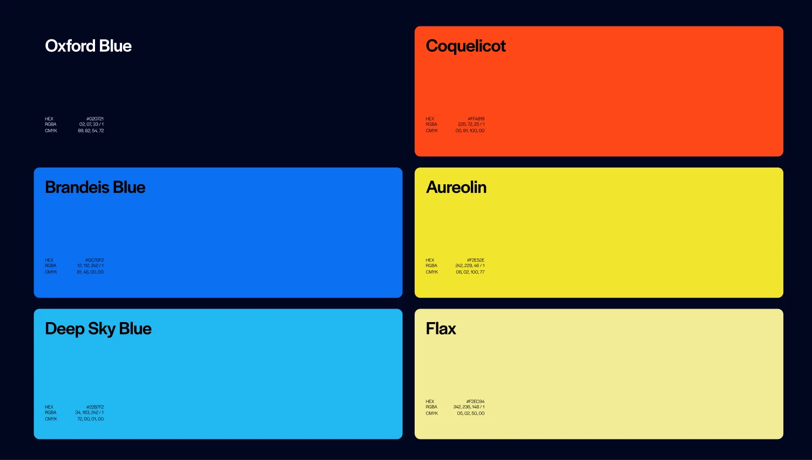
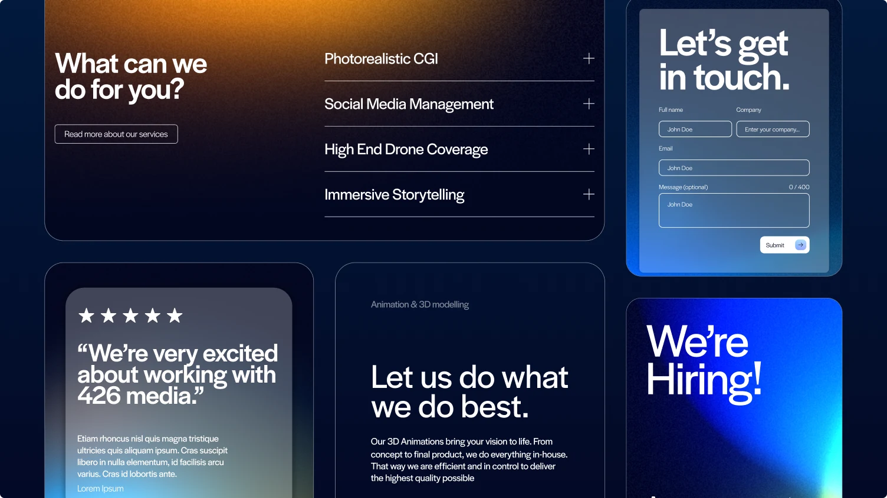
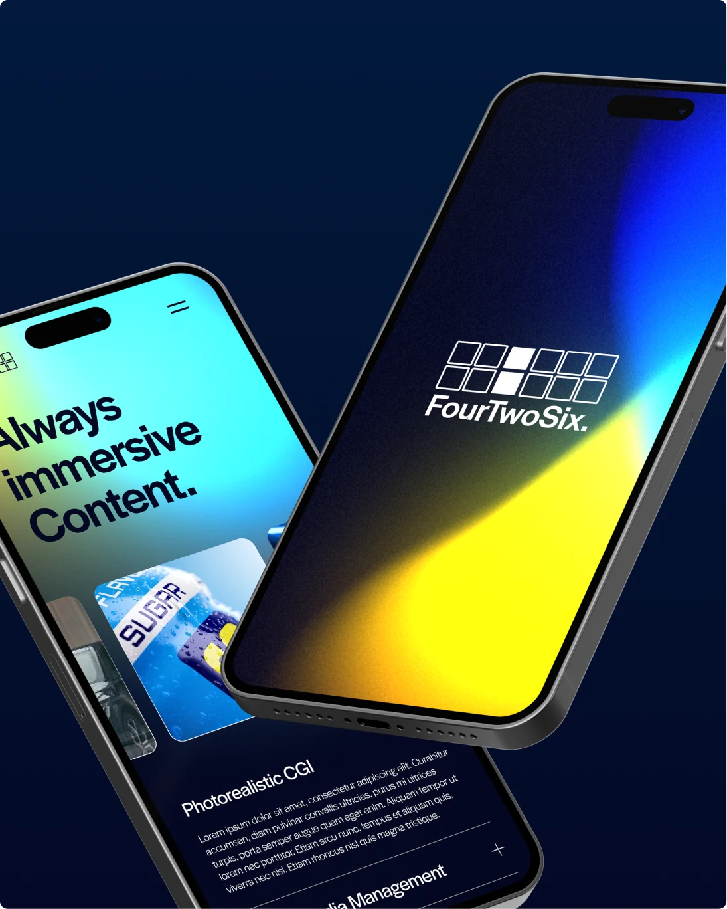
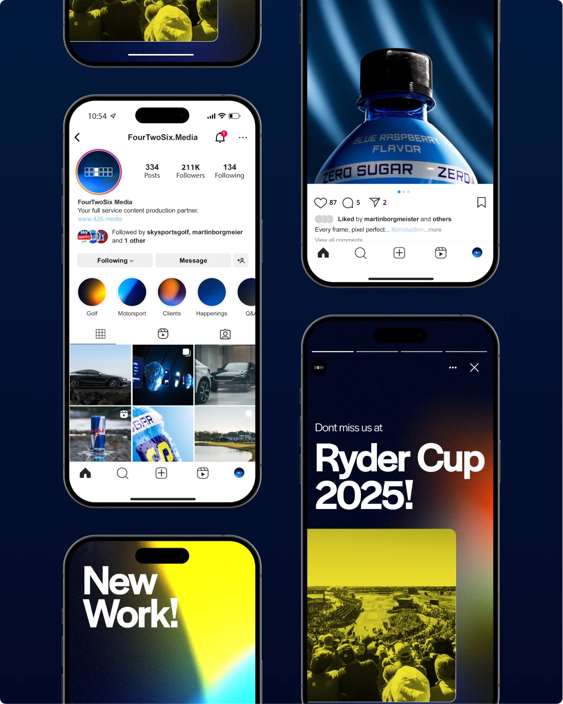
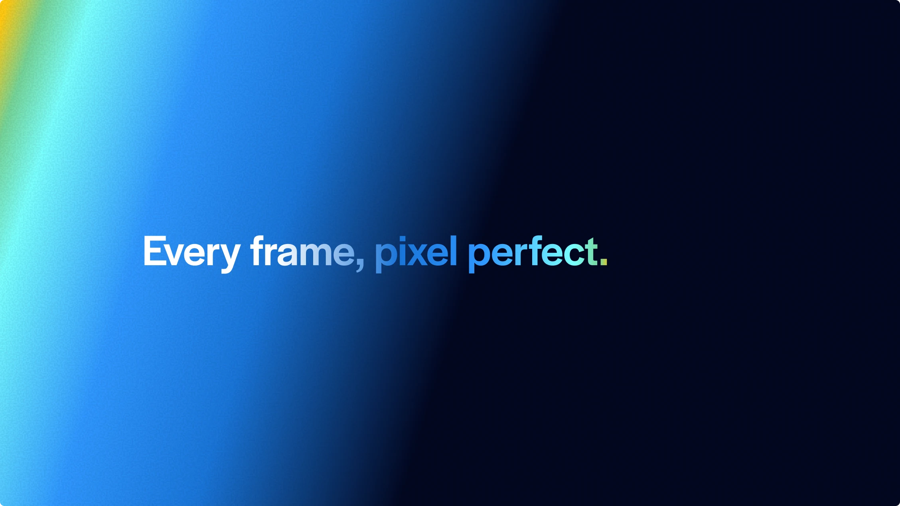
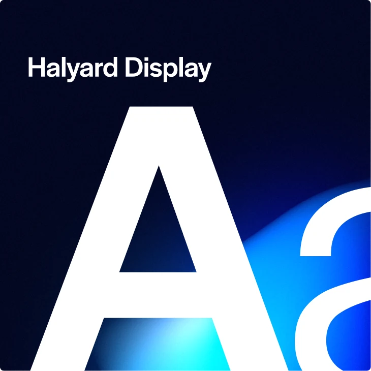
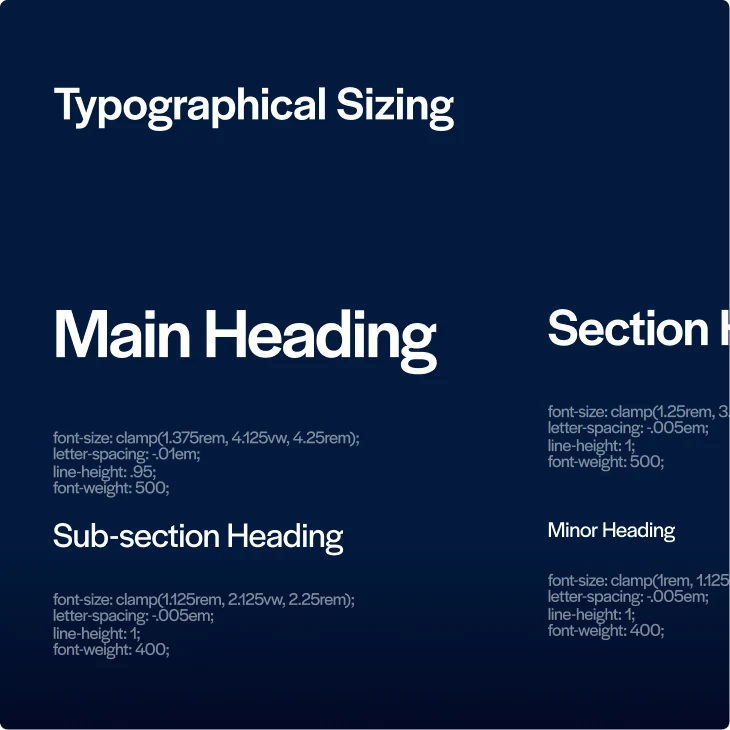
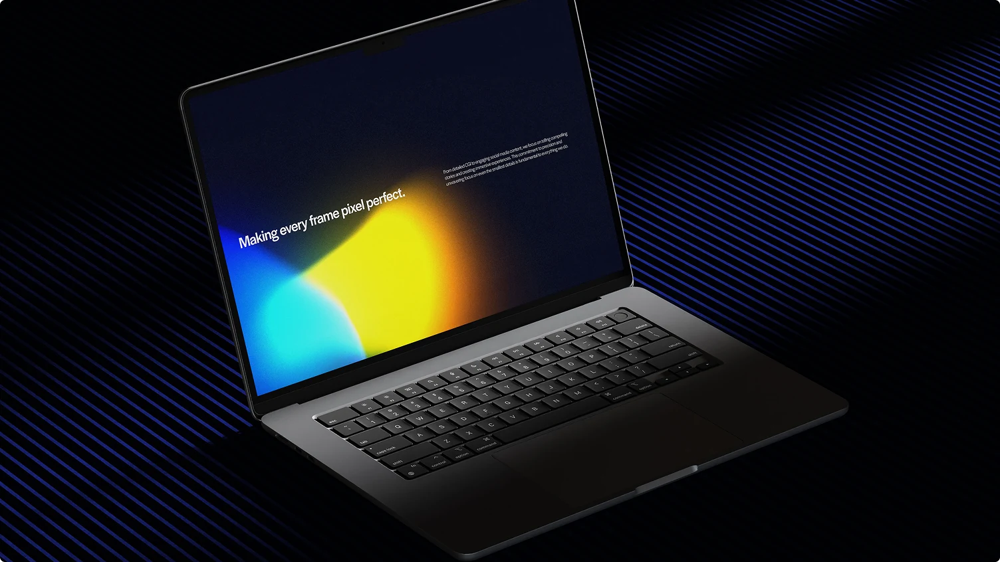

- FourTwoSix
- Rebrand / Identity
FourTwoSix
Role: Art direction and design
FourTwoSix is a visual production studio focused on photorealistic CGI, high-end drone footage, and immersive content, everything from social campaigns to branded shorts. The work was doing the heavy lifting and the old brand was struggling to keep up. They lacked a cohesive system that could speak for itself and feel as considered as the content they put on screen.

The logo is built upon a 2×6 grid as a subtle nod to a frame, a sensor, a strip of film. A simple inversion creates a distinct visual mark spelling out the studio name.

Two scales, one warm and one cold. Blue and orange work together, the way a sensor reads light.
A suite of gradients, inspired by the refractions of a camera lens, brings energy and dynamism to the identity, used subtly or dramatically across full-screen video.






